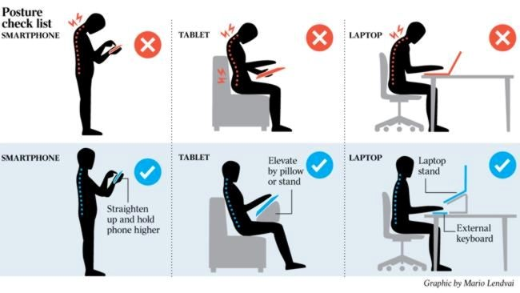
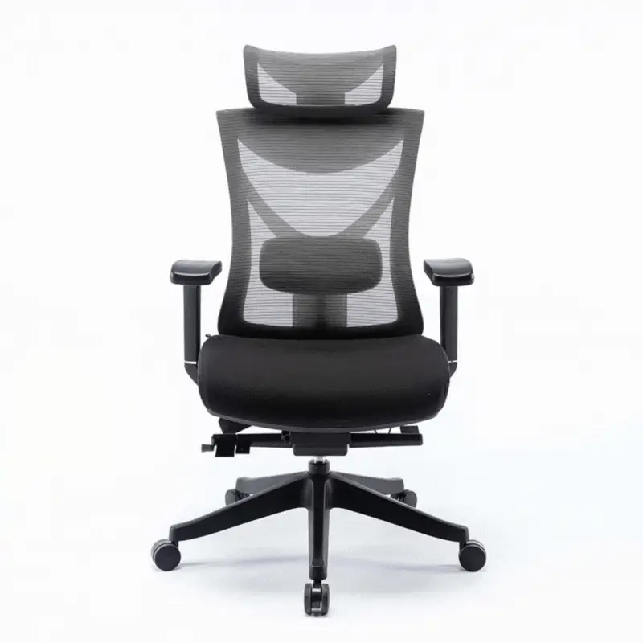

Score:
Health and Safety |
|
Technological innovations have brought great convenience to us and become a part of our everyday life. We spend hours per day on computers and smart devices to work, study or entertain ourselves. However, prolonged computer use may cause health problems. Cheng Sze Shing Jackson 6D 06 |
|
 |
A) Health risks and correct postureIf we do not maintain a proper posture and workstation set-up during prolonged use of computers and mobile devices, it will increase the following health risks, such as repetitive strain injury (RSI) and eyestrain. Therefore, it is essential to be aware of good posture and other ergonomic practices. |
 |
B) Computer ergonomicsErgonomics is a science-based discipline about designing or arranging workplaces, products and systems to suit the people who use them. Ergonomics aims to optimise the strengths and abilities of people and minimise the risk of injury or harm through improving the tools and environments for working, resting and playing. Apart from proper posture and correct positioning of furniture, taking regular breaks and exercising are also the keys to minimise the risk of injuries or harm. It may be difficult to create a new routine so it is a good way to use a break reminder software to remind you to rest. |
C) Ergonomics in the user interfaceErgonomics is not only related to the physical aspects such as body size and dominant hand, but also the individual's age, strength, technological experience, skill, cultural expectation, goal and so on. Ergonomic and user-friendly features are important in software design. |
|
What to Read Next:If you’d like to learn more about display screen equipment (DSE) health and safety, take a look at High Speed Training’s online DSE Training. The course covers everything you need to know about legal responsibilities, correct workstation set-up and risk assessment. You can find some great free resources available to download. Visit the DSE Workstation Assessment Checklist to help you assess your computer workstation and eliminate any risks. You can also download the Desk Ergonomics Infographic which can be printed out and stuck somewhere in the workplace to give people a quick reminder. Source: https://www.highspeedtraining.co.uk/hub/computer-health-and-safety/ | |